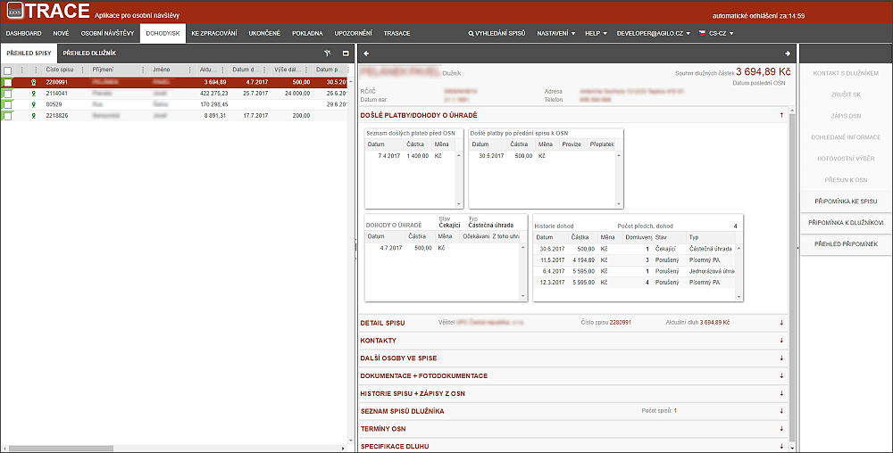

Záložka DOHODY/SK
Tato záložka obsahuje všechny spisy, na kterých jsou evidovány dohody na úhradě mezi inspektorem a dlužníkem, tzn. je očekávána platba od dlužníka.

Uživatel má možnost pracovat se spisy, např. přesunout do záložky OSOBNÍ NÁVŠTĚVY a KE ZPRACOVÁNÍ.
V případě porušení SK přijde informace pro IP formou Urgence a IP má 5 dní (nastavitelné supervizorem) na to situaci u DL napravit, než se spis znovu dostane do záložky OSOBNÍ NÁVŠTĚVY. Při ručním přesunu spisu je SK zneplatněn.